LLMs¶
https://www.youtube.com/watch?v=Q5baLehv5So
Slides: https://cme295.stanford.edu/slides/fall25-cme295-lecture3.pdf
Definition¶
LLM - Large Language Model
Language Model: a statistical or machine learning model that assigns probabilities to sequences of tokens.
Large: involves 100s of Bilions of parameter and large computation time for both inference and training
Most of LLMs are decoder-only transformer based
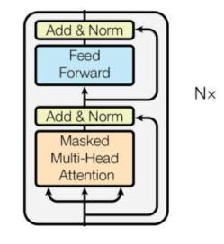
Despite BERT which is a encoder-only transformer based model.
flowchart LR
classDef input fill:none, stroke: none;
classDef danger fill:#008080, stroke: #008000, color: #FFA500;
Node1[x]:::input --> Node2[BIG MODEL]:::danger
Node2 --> Node3[y^]:::inputExamples of LLMs¶
GPT, Gamma (Google), DeepSeek, LLama etc...
MoE - Mixture of Experts¶
The intuition is of involve only subparts of the model to generate a specific output to reduce the computation overhead need by the complete model
flowchart LR
classDef input fill:none, stroke: none;
classDef danger fill:#008080, stroke: #008000, color: #FFA500;
Node1[x]:::input --> Node2[BIG MODEL subpart]:::danger
Node2 --> Node3[y^]:::inputThe idea is to divide the model into subparts called experts \(E_i \rightarrow i \in [1,\dots,n]\)
Given the input \(x\), the gate or route \(G_i(x)\) selects how the corresponding expert contributes in the output generation, so that
The word expert represents the concept that each \(E_i\) is logically specialized on processing a specific category of tokens:
Expert 1 ── perhaps useful for code
Expert 2 ── perhaps useful for mathematics
Expert 3 ── perhaps useful for natural language
Expert 4 ── perhaps useful for factual knowledge
Expert 5 ── perhaps useful for multilingual patterns
...
But the categories are not assigned to the model externally, they emerge from the training phase, where routes and experts are trained together
Dense MoE¶
All available experts are involved in the output generation with a contribution weighted by the applicable gate
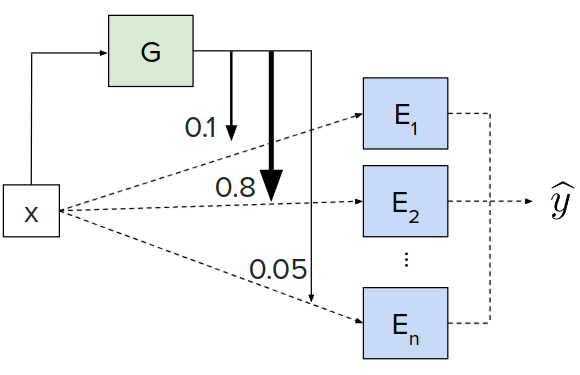
Sparse MoE¶
Only a top-k selection of gates is used for the output generation
\(K\times G_i(x) \in \mathbf{I}[0,1]\)
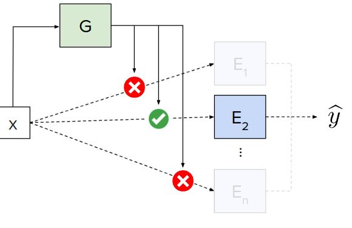
Integration of MoE in decoder based LLMs¶
In a decoder-only base LLM such as GPT-style models, a Mixture of Experts (MoE) replaces the normal dense feed-forward network (FFN) in some or all Transformer layers.
IDEA: For each token, the model dynamically chooses a small number of experts instead of running the token through one shared FFN.
Normal Encoder only transformer
flowchart LR
classDef noDecoration fill: none, stroke: none;
classDef attention fill:#008080, stroke: #008000, color: #FFA500;
classDef an fill:#FFFACD, stroke: #FFD700, color:#FF8C00;
classDef ffn fill:#4682B4, stroke: #1E90FF, color:#AFEEEE;
token[tokens]:::noDecoration --> MMHA
subgraph Trans1 [Decoder Transformer Layer]
direction LR
MMHA[Masked
Multi-Head
attention]:::attention--> AN1[Add and Norm]:::an
AN1 --> FFN[FFN]:::ffn
FFN --> AN2[Add and Norm]:::an
AN1 --> AN2
end
token[tokens]:::noDecoration --> AN1
AN2 --> output[output]:::noDecoration
Transformer with MoE
flowchart LR
classDef noDecoration fill: none, stroke: none;
classDef attention fill:#008080, stroke: #008000, color: #FFA500;
classDef an fill:#FFFACD, stroke: #FFD700, color: #FF8C00;
classDef router fill:#f09493, stroke: #ef5554, color: #fefefe;
classDef expert fill:#1d5bdc, stroke: #171721, color: #fefefe;
token[tokens]:::noDecoration --> MMHA
subgraph Trans1 [Decoder Transformer Layer]
direction LR
MMHA[Masked
Multi-Head
attention]:::attention--> AN1[Add and Norm]:::an
AN1 --> RTR
subgraph MOE [MixOfExperts]
style MOE fill: #f9f,stroke: #333, stroke-width: 2px
direction LR
RTR[(Router)]:::router
RTR --> E1:::expert
RTR --> E[...]:::noDecoration
RTR --> En:::expert
E1 --> WS[[Wighted sum]]
E --> WS
En --> WS
end
WS --> AN2[Add and Norm]:::an
AN1 --> AN2
end
token[tokens]:::noDecoration --> AN1
AN2 --> output[output]:::noDecoration
So, each token of the input
The cat sat on the mathematical matrix.
this could be a possible number of experts involved for each token (top-2 approach for a sparse MoE)
"The" → Expert 2, Expert 5
"cat" → Expert 1, Expert 4
"sat" → Expert 1, Expert 3
"on" → Expert 2, Expert 6
"the" → Expert 2, Expert 5
"mathematical" → Expert 3, Expert 7
"matrix" → Expert 3, Expert 7
MoE increases parameters without increasing computation¶
Suppose a normal transformer has FFN of 10B parameters, the corresponding transformer with MoE layer uses \(n \times 10B\) parameters but only \(K \times 10B\) parameters in case of top-k sparse MoE
The load balancing problem¶
One of the potential problems with MoE networks is that
Router collapses on some overused experts, despite others are use seldom.
- Expert 3 becomes overloaded.
- Other experts are barely trained.
- The computational advantage disappears.
- The model doesn't use its full capacity.
Remedy¶
MoE training normally includes a load-balancing mechanism encouraging tokens to be distributed among experts.
During trainig the loss function is modified to point to a more uniform usage of experts
- \(alpha\): hyperparameter
- \(N\) number of experts of MoE
- \(f_i\) fraction of tokens routed to expert \(i\)
- \(P_i\) average probability of token being routed to expert \(i\)
The picture shows what expert (for each color) is involved in the processing of the code snippet below (a more or less uniform distribution of colors)
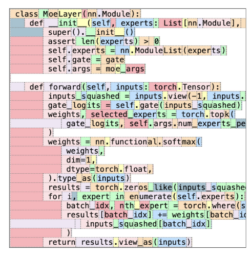
Response generation¶
A traditional LLM generates a prediction over the next token on the sequence of input in the form of token probabilities
sequenceDiagram
participant I as Input
participant LLM as Model
participant O as Output
I ->>+ LLM: [BOS]
LLM ->>- O: A
I ->>+ LLM: A
LLM ->>- O: Teddy
I ->>+ LLM: Teddy
LLM ->>- O: bear
I ->>+ LLM: bear
LLM ->>- O: isThe output at every time step is the distribution of probabilities for the next token
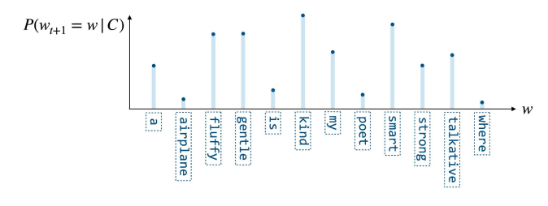
Approach 1: choose the token with the highest probability¶
kind
- pros: deterministic approach for the best possible answer
- drawback: it always chooses the same output (if we ask ChatGPT or Gemini it always gives different answers)
- drawback: the real target of the LLM is to produce the highest quality output sequence therefore, it is not guaranteed that each highest prob token produces an overall highest probability sequence not globally optimal
Approach 2: beam search - keep K paths with higher probabilities¶
keep the top \(k\) candidate sequences and expand all of them at the next step.
Soppose to start with The cat is
The model predicts probabilities for the next token:
| Next token | Probability |
|---|---|
sleeping |
0.40 |
eating |
0.30 |
running |
0.15 |
playing |
0.10 |
big |
0.05 |
The greedy approach would have just selected sleeping, with the beam search and \(k=2\) we keep
The cat is sleeping (0.4) and The cat is eating (0.3)
now prediction is done for both branches
sleeping
| Next token | Conditional probability |
|---|---|
on |
0.50 |
peacefully |
0.30 |
now |
0.20 |
and eating
| Next token | Conditional probability |
|---|---|
fish |
0.60 |
quickly |
0.25 |
the |
0.15 |
Now we have \(2×3=6\) candidate sequences.
| # | Predicted sequence | \(P\) |
|---|---|---|
| 1 | The cat is sleeping on |
\(P=0.40×0.50=0.20\) |
| 2 | The cat is sleeping peacefully |
\(P=0.40×0.30=0.12\) |
| 3 | The cat is sleeping now |
\(P=0.40×0.20=0.08\) |
| 4 | The cat is eating fish |
\(P=0.30×0.60=0.18\) |
| 5 | The cat is eating quickly |
\(P=0.30×0.25=0.075\) |
| 6 | The cat is eating the |
\(P=0.30×0.15=0.045\) |
So the first two are taken The cat is sleeping on (0.20) and The cat is eating fish (0.18).
NOTE: Even though, initially, sleeping had higher probability, the sequence The cat is eating fish became
more competitive (\(\Delta_{eating}=0.1\) while \(\Delta_{eating,fish}=0.02\))
Continuing the process for The cat is sleeping on
| Token | Probability |
|---|---|
the |
0.70 |
a |
0.20 |
my |
0.10 |
and The cat is eating fish
| Token | Probability |
|---|---|
. |
0.80 |
and |
0.10 |
at |
0.10 |
now the sequences
| # | Predicted sequence | \(P\) |
|---|---|---|
| 1 | The cat is sleeping on the |
\(P=0.20×0.70=0.14\) |
| 2 | The cat is sleeping on a |
\(P=0.20×0.20=0.04\) |
| 3 | The cat is sleeping on my |
\(P=0.20×0.10=0.02\) |
| 4 | The cat is eating fish. |
\(P=0.18×0.80=0.144\) |
| 5 | The cat is eating fish and |
\(P=0.18×0.10=0.018\) |
| 6 | The cat is eating fish at |
\(P=0.18×0.10=0.018\) |
Again, keep the top 2:
The cat is eating fish . — 0.144
The cat is sleeping on the — 0.140
Therefore:
The cat is eating fish. is actually slightly more probable as a complete sequence than the alternative.
Probabilities vs log probabilities¶
In order to multiply values <1 producing vanishing results, in real implementations the log is used:
\(P(x1,x2,x3)=P(x1)P(x2)P(x3)\) becomes
\(log{(P(x1,x2,x3))}=log(P(x1)P(x2)P(x3))=log(P(x1))+log(P(x2))+log(P(x3))\)
The cat is sleeping on -> \(log(0.40) + log(0.50)\)
rather than: \(0.40 × 0.50\)
Limitation: requires more computation, the output is very likely but less creative
Approach 2: sample next token from probability distribution¶
The sample algorithm could also select tokens with very low probability, possible solutions are:
-
TOP-k: Sample among top-k probability tokens
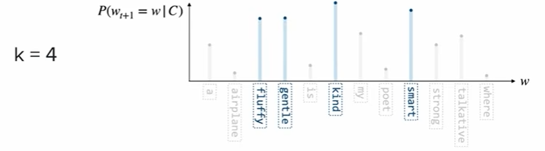
-
TOP-p: Sample among the smallest set of token with cumulative probability where \(\sum_iP(w_i) \ge p\)
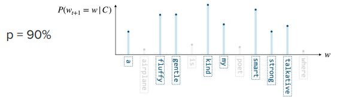
Output probability computation¶
We have seen that transformers (encoder or decoder only) produce outputs as next-token predictions within the vocabulary
The process of GPT-like models is more or less:
Input tokens
│
▼
Embeddings (position, segment...)
│
▼
Transformer layers
│
▼
Final hidden state h [d_model]
│
│ Linear projection / LM head
▼
Logits z [V]
│
│ divide by temperature T
▼
Scaled logits [V]
│
│ Softmax
▼
Probabilities [V]
│
▼
Select/sample next token
The Transformer doesn't directly output probabilities for the vocabulary. It outputs a hidden representation, and the LM head projects that representation into vocabulary space.
in case we have
Suppose we have:
- vocabulary size \(V = 50,000\)
- model dimension \(d_model = 4,096\)
- sequence length \(N = 100\)
At the end of the transformer we have \(H \in \mathbf{R}^{N,d_{model}}\) where each row represents the contextual representation of the same position of the input
H =
[token 1] [ 4096 numbers ]
[token 2] [ 4096 numbers ]
[token 3] [ 4096 numbers ]
...
[token 100] [ 4096 numbers ]
The linear projection changes the output to the vocabulary dimension for each token \(h \in \mathbf{R}^{d_{model}}\)
we need a matrix of \(W_{out} \in \mathbf{R}^{d_{model}, V}\) so that
those are logits we need to convert those to a probability distribution with softmax that is scaled by the temperature:
So the pipeline becomes
\[h \rightarrow z=hW_{out} \rightarrow z=z/T \rightarrow softmax \rightarrow p\]The temperature factor does not change the distribution but re-shapes the prob distribution * low T: amplify logit differences -> sharper distribution -> more deterministic output * high T: reduce logit differences -> flatten distribution -> more random/diverse output
Example with \(z=[3,1,0.5]\)
| \(T\) | \(z/T\) | \(p\) | Result |
|---|---|---|---|
| 1 (same as no temperature) | \([3,1,0.5]\) | \([0.86,0.12,0.02]\) | |
| 0.5 | \([6,2,1]\) | \([0.98,0.02,0.01]\) | sharper: strongest token became even more dominant |
| 2 | \([1.5,0.5,0.25]\) | \([0.49,0.30,0.22]\) | flat: less likely tokens have gained probability |
NOTE: \(T=0\) would make the sampling of the probabilities deterministic
Prompting strategies¶
CoT - Chain of thought¶
In LLMs, chain-of-thought (CoT) refers to generating intermediate reasoning steps between the problem and the final answer.
Example:
Normal answer
With CoT style answer
The LLM is still fundamentally predicting tokens one after another. Chain-of-thought doesn't introduce a special reasoning algorithm into the Transformer.
In order to answer a question, CoT generates the next token of the logical steps to the solution, the generated token enters the context again with the idea that it is closer to the solution and makes the reasoning more straightforward.
For instance, the answer to the question
could be directly 408 or, with the CoT be like
The process would be then
Question
│
▼
Transformer
│
├── "17"
▼
Transformer + "17"
│
├── "×"
▼
Transformer + "17 ×"
│
├── "20"
▼
...
│
▼
"Therefore, the answer is 408."
The key insight is that the intermediate tokens become additional computational workspace.
CoT converts some of the reasoning problem into a sequence of token-generation steps.
This way we can see the logical step of the solution, that is not the way the transformer inference internally works (activations, sel attentions etc..)
the drawback is more latency and tokens cost
Self-consistency¶
This is applied over CoT:
- the model produces several CoT answers (reasoning paths) to the same questions in parallel
- the final answer correctness is statistically evaluated
Question: A shirt costs €80 and is discounted by 25%. What is the new price?
┌── Reasoning path 1 ──→ €60
│
Question ────────┼── Reasoning path 2 ──→ €63
│
├── Reasoning path 3 ──→ €60
│
├── Reasoning path 4 ──→ €65
│
└── Reasoning path 5 ──→ €60
│
└── Reasoning path 6 ──→ €60
│
▼
majority vote
│
▼
€60
Here, even though reasoning paths might be the same, we are interested in the result, because the LLM produces tokens with a probability and this can lead to different paths and answers
The problem of extracting the final answer from the output remains (regex, ask LLM to answer in the last token...), train other LLM to extract the answer
Trade off between performance and costs
Inference optimisations¶
- What redundancy, memory to improve efficiency
- what approximations trade-offs are acceptable to improve efficiency
Optimization - \(K,V\) caching¶
The transformer uses a masked self-attention layer, that means that self-attention can only attend previous tokens in the sequence
since the attention is \(Attention(Q,K,V)=softmax(\frac{QK^\mathsf{T}+M}{\sqrt{d_k}})V\)
with \(Q=XW_Q\), \(K=XW_K\) and \(V=XW_V\).
We want to compute the self-attention for the token next to the The cat sat
so we need \(Q_{new}K^\mathsf{T}\)
but the key matrix is just the postposition of
The crucial observation is that these three keys have already been computed.
Because of causal masking, the new token cannot affect the representations of the old tokens, so we can cache all the key matrices for the computation of the new
The same goes for the \(V\) value matrix
Sharing attention heads¶
As seen in transformer_components.md
Speculative decoding¶
Instead of asking the large model to generate one token at a time, let a cheap model propose several tokens, then use one large-model pass to verify all of them.
With normal LLMs, if we ask Waht is the capital of France, we would get the answer
What is the capital of France?
↓
Large LLM
↓
"The"
↓
Large LLM
↓
"capital"
↓
Large LLM
↓
"is"
↓
Large LLM
↓
"Paris"
The generation is serial, only the training can be parallelized. Eeach token is a forward pass through the LLM transformer
\(x_1 \rightarrow x_2 \rightarrow \dots \rightarrow x_n\)
Speculative encoding uses two LLMs
- Draft LLM: small model used to generate the sequence of response tokens sequentially
- Target LLM: large LLM to estimate probabilities of the generated sequence of tokens (It checks whether the proposed tokens are consistent with what it would generate.).
Draft model
│
▼
proposes several tokens
│
▼
The capital of France is Paris
│
▼
Large model
verifies them
The idea is to pass the entire answer to the target model, which, using the mask self attention layers, will attend to all previous tokens as hidden state, in the generation of the next one.
Validation rule¶
There is a more precise acceptance rule that makes speculative decoding preserve the target model's distribution.
Let:
- \(q(x)\) = draft model probability
- \(p(x)\) = target model probability
so if a token has \(q(x_i)=0.5\) and \(q(x_i)=0.8\)
the \(P(x_i)=min\left(1,\frac{0.8}{0.5}\right)=1\) we accept the token because the target model increased the probability
if we have \(q(x_i)=0.5\) and \(q(x_i)=0.25\)
the \(P(x_i)=min\left(1,\frac{0.25}{0.5}\right)=0.5\) so we accept the token with probability 0.5 or, otherwise, we take the token from the target LLM
Example¶
- Current context:
The capital of France - Next Draft LLM generated tokens:
is,Paris,and,it - The target LLM receives:
The capital of France | is | Paris | and | it - The decoder-only target LLM produces a hidden state for every previous position (because of causal masking)
position target predicts
The P(next token | The)
capital P(next token | The capital)
of P(next token | The capital of)
France P(next token | The capital of France)
is P(next token | The capital of France is)
Paris P(next token | ... Paris)
and P(next token | ... and)
it P(next token | ... it)
The big advantage is that we do multiple passes for the token generation with a small (faster) LLM and the validation with one pass only of the target LLM
MTP - Multi Token Prediction¶
We have seen that with speculative prediction a draft LLM is used to predict multiple tokens sequencally and a target LLM validates the prodictions in one inference pass.
The idea behind MTP is to have the draft LLM embedded in the target LLM
The model has multiple prediction heads concatenating the output from the previous head to increase the number of predicted tokens per pass.
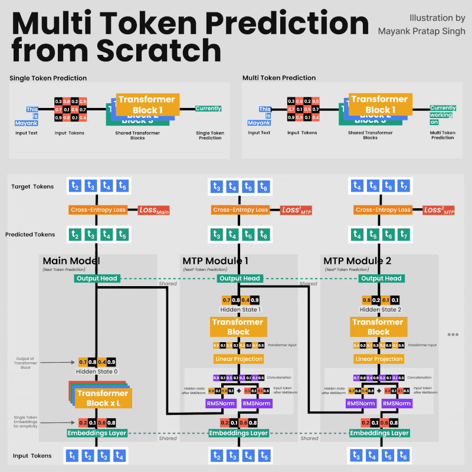
The input of a LLM is measured in terms is number of tokensflowchart LR
classDef input fill: none, stroke: none, color:#155724;
classDef llm fill: #d4edda, stroke: #28a745, color:#155724;
I[Is the Teddy Bear cute?<br>]:::input --> LLM:::llm
LLM --> O[Yes]:::input
%% Note element
n1>"Context length</br>Context size</br>Window size"]
style n1 fill:#ff9,stroke:#333,stroke-width:1px,color:#000
I -.- n1Context rot¶
We now have LLM models (GPT) that can handle up to tens of hundreds of input tokens in a single pass. The risk with such large numbers is what is called context rot.
The test used in the article is called needle in the haystack: the answer to the question in the input is buried in larger and larger context windows.
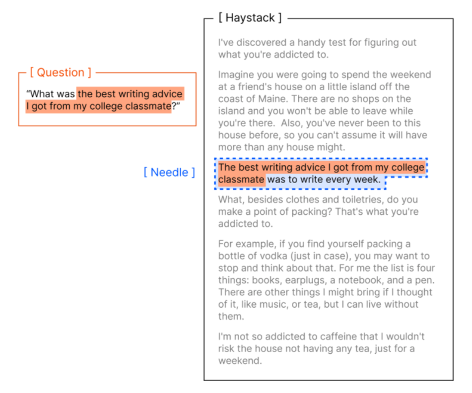
Then the performance of the model to retrieve the answer is retrieved.
The conclusion is that the retrieval capability decreases with increasing context lengths.
This is due to the presence of distractors (noise) confusing the model in retrieving the answer.
Structuring the input¶
There is a mental model to structure the input to the model to optimize efficiency and effectivness:
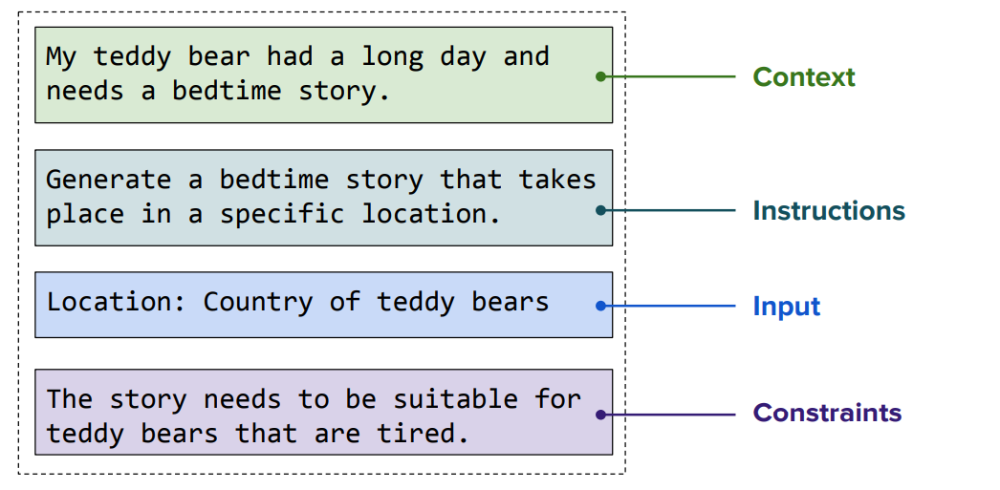
- context: we give the model all the knowledge needed to understand the problem
- instructions: clear explanation of what we want to achieve
- input: additional input to the problem
- constraints: how the output should be limited
ICL In-Context Learning¶
This is a way to steer the output of LLMs without training the model (tuning the weights with backpropagation)
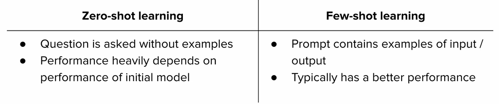
In the zero-shot we only give the model the input query without any example. In few-shot we give some examples of input/output couples, including the input query but it requires effort, increase the latency of the model and its computation.
In modern models, it's seen that wel structured input tends to produce even better reasoning results than the few-shots approach, because it does not limit the possibilities of the model generation/reasoning
Chain of thoughts¶
Models can be fine-tuned on datasets containing problems and explanations, teaching them to produce structured reasoning.
So, for input query requiring more reasoning, the model can decompose the query into small problesm and produce the logical step to reach the answer
Each logical step is given as additional context to the transformer to contribute to the response generation
The model generates one token at the time and the additional token is given to the transformer as input
Example
With CoT the model could produce
The generation process is then
Question
│
▼
Transformer
│
├── "17"
▼
Transformer + "17"
│
├── "×"
▼
Transformer + "17 ×"
│
├── "20"
▼
...
│
▼
"Therefore, the answer is 408."
CoT converts some of the reasoning problem into a sequence of token-generation steps.
More token consumption, more latency.